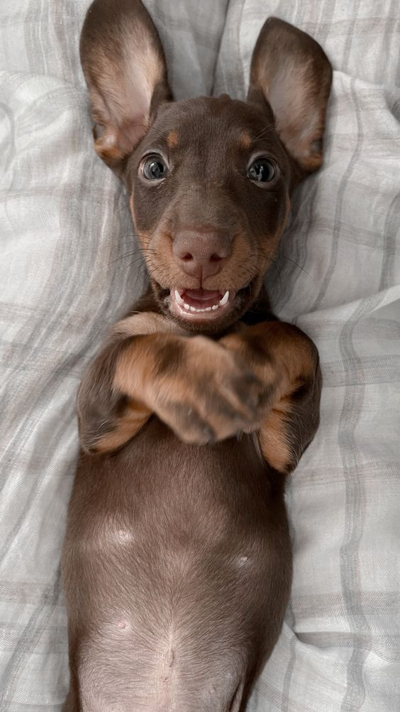
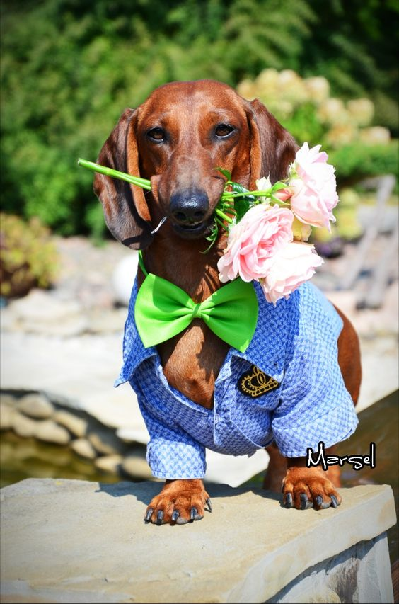

dachshund
Breed of South German burrowing hunting dogs
varieties of the breed
-

rabbit dachshund
-

standard dachshund
-
dwarf dachshund
my home dog
Начало жизни
История этого малыша начинается 21.08.2009г. Спустя пару месяцев он оказался у нас дома и был назван Ральфом.
В детсве он был жутким хулиганом: отрывал линолеум с пола, вытаскивал поролон из диванов и так далее...
Некоторые факты из его жизни
У него было свое одеяло, без которого он не мог спать
Он очень любил сбегать из дома, но потом все равно возвращался
Все игрушки, которые ему покупали, он сразу же разгрызал
Грустный конец
Весной 2019 года он начал сильно болеть и с каждой неделей ему становилось хуже. Его лечили как только могли, но болезнь взяла свое.
В итоге 30 августа 2019г его не стало. Это было горе для всей семьи, но мы думаем, он прожил счастливую и хорошую жизнь.